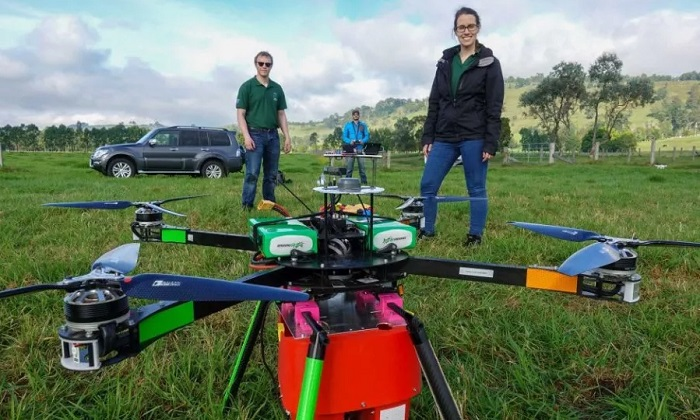

ESTE EQUIPO DE RPAS PUEDE SEMBRAR 100.000 SEMILLAS EN UN DÍA
La empresa británica BioCarbon Engineering ha desarrollado un novedoso sistema basado en el uso de drones para replantar árboles en terrenos deforestados. Se trata de un equipo compuesto por dos tipos de drones, uno de ellos de ala fija, para mapear el terreno, sumado a otras aeronaves multirrotor, que llevan a cabo la siembra propiamente dicha.
BioCarbon Engineering presume de que sus drones pueden sembrar hasta 100.000 semillas de árboles en un día. Según la información que ha presentado la empresa británica, el sistema de reforestacion estaría basado en 6 drones. Uno de ellos es el ala fija, mientras que los otros 5 son multirrotores, destinados a -casi literalmente- disparar las cápsulas que contienen las semillas debidamente nutridas.
El trabajo del ala fija, que en las imágenes de la web corporativa parece un eBee de senseFly, consiste en determinar la orografía, la presencia de biodiversidad en la zona y otros obstáculos para la siembra. A partir de ahí se obtienen los patrones óptimos para llevar a cabo la siembra desde los otros drones. Estos RPAS mutirrotor están preparados para cargar con 300 cápsulas de semillas y peinar una hectárea en 18 minutos. Estos impresionantes números son los que permiten una tasa de reforestacion tan rápida e intensa.

El sistema de BioCarbon Engineering también contempla la fase posterior a la replantación. En ella sus drones revisan el estado de la vegetación para determinar que la operación ha sido un éxito.
La compañía británica lleva tiempo trabajando en su sistema. El resultado ha sido una nueva aplicación para los RPAS, que ya se han convertido en herramientas apreciadas en el mundo de la agricultura, la topografía y en tareas que se desarrollan en campo abierto. Y es que, tal y como la empresa de Reino Unido lo tiene diseñado, este sistema podría marcar la diferencia a la hora de realizar tareas de reforestación. Estas aún se basan en métodos relativamente poco automatizados, con lo que suponen una gran cantidad de tiempo.
Los drones tienen la oportunidad de reducir drásticamente el tiempo que se emplea en repoblar un terreno. Pero, además, pueden acceder a lugares agrestes, que por culpa de la orografía no resulta fácil replantar.